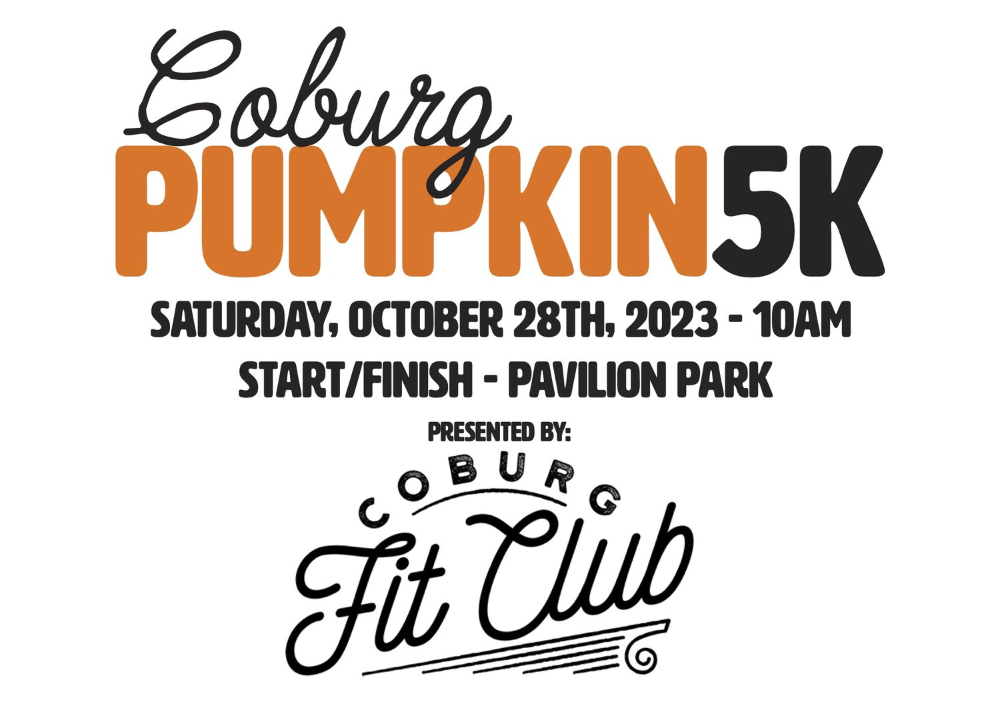

Coburg Main Street
Home
Discover
Directory
Join
Discover Coburg Events

Coburg Pumpkin 5k
A Delightfully Whimsical Fun Run with a Twist
When: TBD
Location: Around Coburg
/coburg-pumpkin-5k-fun-run
Step into the spirit of autumn at the Coburg Pumpkin 5k, a one-of-a-kind event taking place at Pavilion Park in the charming town of Coburg. This festive fun run/walk will lead participants through the scenic town, offering a captivating route filled with amazing sights. As you navigate the path, you'll be greeted by captivating Scarecrow displays, remnants of the recent Scarecrow Festival held in Coburg. Marvel at the creativity and artistry showcased in these whimsical creations, each one telling its own story and adding a touch of magic to your journey. What sets this event apart from traditional 5k runs is its unique twist: participants are encouraged to carry their own pumpkin throughout the course. Whether you choose a petite pumpkin or a hefty one, the weight on your shoulders adds an extra challenge, bringing an element of fun and excitement. The Coburg Pumpkin 5k is not a timed race but rather a celebration of community, joy, and embracing the spirit of the season. As you cross the finish line, two distinct titles await the triumphant participants: the first runner to reach the end and the individual with the heaviest pumpkin. These winners will forever be remembered as the champions of this memorable event. While trophies await the winners, all registered participants will receive a medal upon crossing the finish line! So gather your friends, family, and neighbors, and join us at Pavilion Park on October 28th for the Coburg Pumpkin 5k. Discover the beauty of Coburg, immerse yourself in the magic of the Scarecrow displays, and revel in the laughter and camaraderie that fills the air. Together, let's create cherished memories and celebrate everything that makes autumn truly remarkable.
 Coburg Main Street
Coburg Main Street